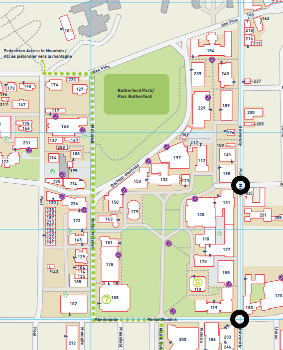
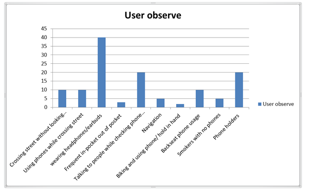
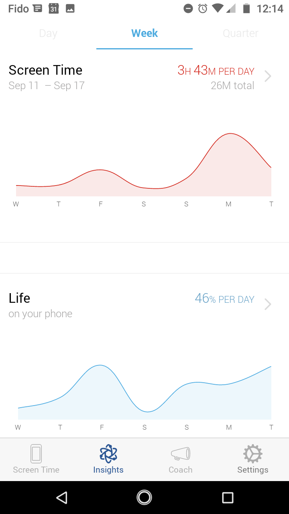
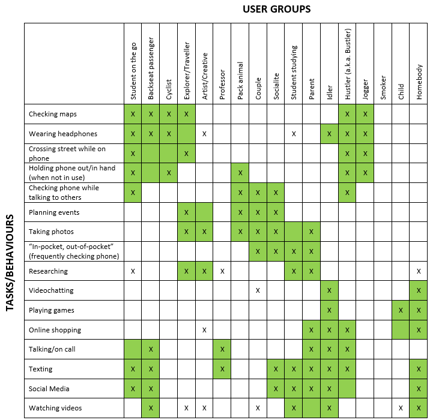
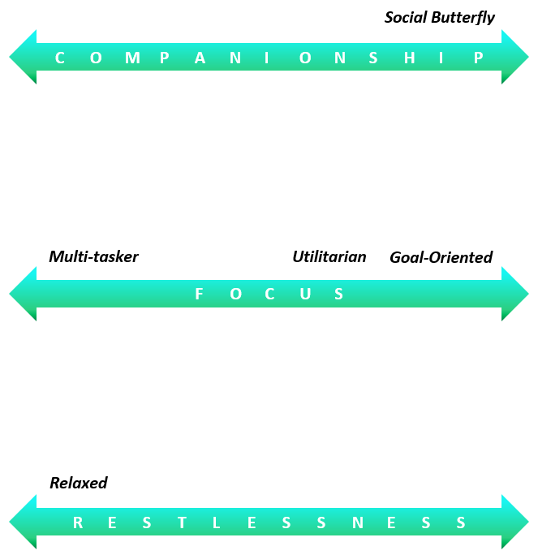
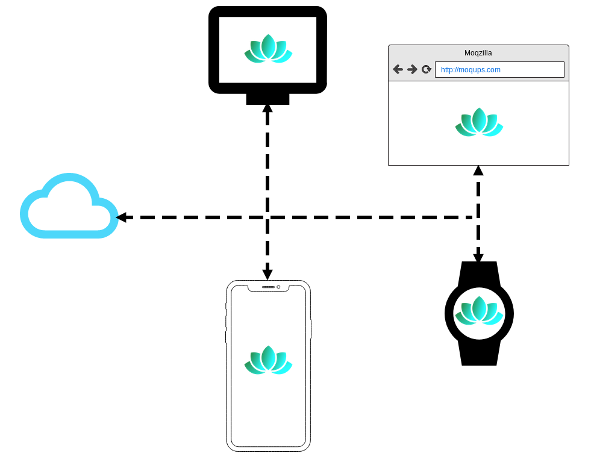
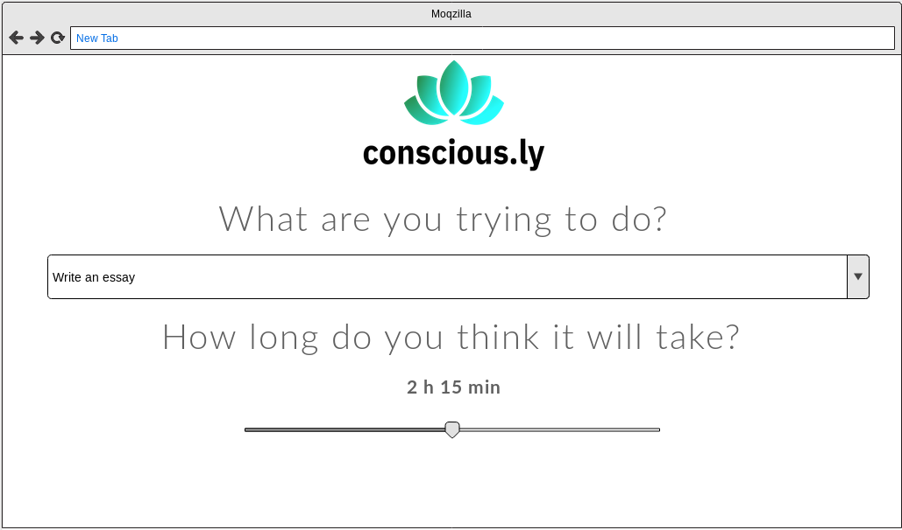
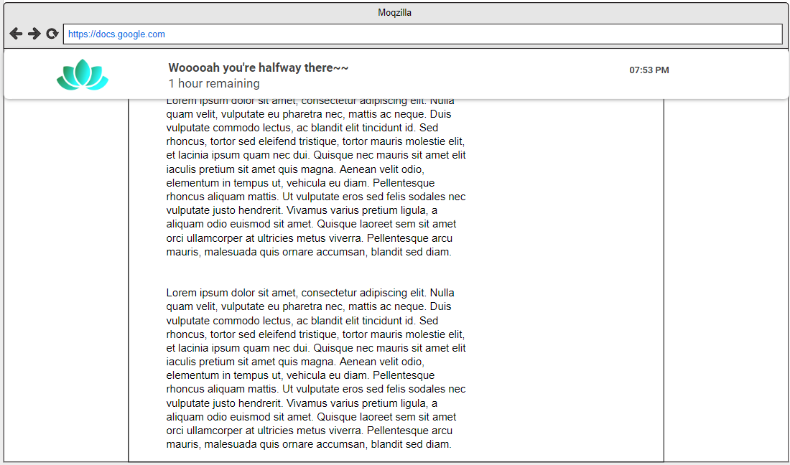
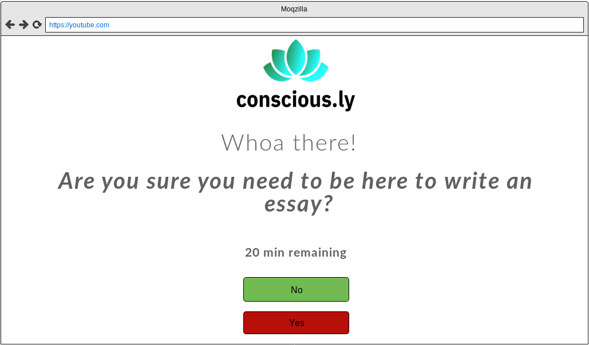

Observations, Research, and Proposal
Summary of Observations
An observation study of cell phone users was carried out on the outskirts of the McGill University downtown campus in Montreal. The group of users observed are pedestrians, cyclists, and vehicle passengers who were out on the streets. All the users observed below manipulated their cell phone continuously or intermittently, so the placement of their cell phone, and how it changes, was also examined. In addition, some users were also approached and asked what they were using their phone for when it wasn’t immediately obvious.

The locations where we made our observations are marked with a black circle
After doing an exhaustive review of our observations, we grouped the behaviour of people into the following task-based groups
- Crossing the street without looking These users had their cell phone in hand, unlocked, and in continuous manipulation. These users are characterized by walking around without paying attention to their surroundings, totally engrossed. By making a more detailed observation of the ways in which they handled their phones, we deduced that they were mostly using entertainment/gaming applications and messaging.
- Using their cell phone while crossing the street These users were intermittently focused on their cell phone. Unlike the previous group when walking down the street with the unlocked cell phone in hand, they alternated between looking down at their screen and observing their surroundings in short intervals to avoid tripping or colliding with other pedestrians. The applications most used by these users appeared to be messaging apps and social networks.
- Using headphones This type of user is characterized by using headphones (headsets, earbuds, earphones). Their cell phone was locked in their hand or pocket. These users are more alert than those mentioned above. When asked what they were listening to, most said music.
- Holding their phone We noted that these users keep their phones locked in their hand all the time, as opposed to in their pockets. Queries to the mobile screen are exclusively to check notifications of applications such as calls or messages. We noticed that keeping their cell phone in hand reduced their ability to carry other things.
- Frequent pocket-in, pocket-out These users default to keeping their cell phone in their pockets, however they do periodic reviews of their device - the sequence is as follows: they look for the cell phone in their pocket, take it out, unlock it, quickly review an application, lock the cell phone and store it back in their pocket again. This sequence was repeated every few minutes during the users’ walk. When consulting which applications were used, users responded that they checked messaging applications, social networks, and calls.
- Talking to other people while checking their phone We observed that users walking in a group are characterized by participating in their groups’ activity, while remaining fixated on their cell phone. These users seemed to be checking social networks, messaging applications, or consulting their internet browsers for information.
- Navigating These users are looking for directions and are consulting navigation applications. They pay attention to their surroundings to corroborate where they are located spatially with the information they have on their cell phone.
- Biking and using phone Some users were observed with phone in hand even when riding a bicycle. Some of these users kept their phones locked in their hands while holding onto the bicycle handle, while others were observed handling and consulting information on their screen. Similar to previous users, they constantly checked their environment to evade obstacles and reorient themselves.
- Passenger phone usage For those riding in motorized vehicles, only the passengers used a phone, and those that were using their phone maintained continuous contact without paying much attention to their surroundings.
- Smokers with no phones During our observations we noticed a peculiarity: the smokers we observed rarely used their cell phones. This is remarkable since the average period of time that other users went without their phone was relatively short, while smokers in the same conditions only took out their cell phone once, if at all, to check the time as they concluded their smoke.
From the observation exercise we can conclude that a user’s cell phone usage correlates directly with a reduction in their alertness to the environment.
Below, we present a graph that summarizes the information we collected from the users in the urban observation session.

In addition to observing how people used technology in an outdoor setting, we monitored our own behaviour over a week with usage monitoring apps such as Moment. We found that we spend an average of 3 hours per day looking at our screens, with the lion’s share of that time being on browsers and social media.

Screenshot of one of our team member’s phone usage as tracked by the Moment App
Problem Definition
The key issue we have identified through our observations is an obsessive use of technology to such a degree that it hinders people’s ability to function normally.
This problematic usage was demonstrated multiple times during our urban observation session, when those using their mobile phones would cross the street without looking or bump into other pedestrians. Moreover, even when these people were using technology in “healthy” ways, i.e. listening to music through headphones but not being distracted by looking down at their phones, it appeared easy for technology to pull them back in. The users would frequently turn back to using their phones, presumably when they were alerted by notifications or disturbed by a phone call.
Similarly, from our own phone usage statistics, we found that most of our time was spent on social media applications and web browsers, with frequent phone unlocks throughout the day. This highlights our tendency to multitask, which research has shown results in poorer memory, higher chances of getting distracted, and slower task-switching rates.
Key Audience Segments
Based on both our urban observations and personal phone-monitoring, we were able to identify different types of user behaviours related to cell phones, as well as types of users who exhibit these behaviours. We used the matrix approach described by Indi Young in her book Mental Models: Aligning Design Strategy with Human Behavior to map behaviours to user groups. From this, we were able to discern patterns and develop five different personas: the Social Butterfly, the Utilitarian, the Goal-Oriented, the Relaxed, and the Multi-tasker.

Prominent Personas
- The Social Butterfly This person is at their best when surrounded by a group of friends. You’re almost certain to find them online on various social media platforms, often checking their notifications even while around others, as their social circles expand beyond the people they can physically be with. They are always planning events, creating new ways to gather all their friends, and cherishing memories by taking and sharing photos.
- The Utilitarian The utilitarian has found the best ways to make use of their phone: wearing headphones to keep out distractions, using the navigator to ensure they know where they’re going, and using fitness apps to keep track of their well-being. This person also often has their phone out even when they aren’t using it - never knowing when they’ll need to check the time, their steps, or the weather.
- The Goal-Oriented This person may be a single parent, or a professor who has both classes to plan and research to pursue. This is the kind of person who knows what they need to get done, and is not easily distracted. They are not avid texters, preferring short texts or calls (where communication is clearer), and will use their browser to research important things; perhaps a quick and easy recipe for dinner, or the location of the nearest car wash.
- The Relaxed This person is calm and collected; you can find them watching videos, browsing the web for neat things to buy, or scrolling through social media. They usually have their headphones in, or at least have music playing, and when it isn’t, they can be found catching up with friends, making use of video-chat and phone calls.
- The Multi-tasker The multi-tasker is somebody who has numerous things going on at once, and is often in a crazy frenzy. This person is always pulling their phone out of their pocket to check something (even while physically with others), is constantly texting, and rarely looks before crossing the street. This person is also very forgetful due to all the things they need to keep track of at any given time.
Audience Themes
After fleshing out these personas, we discovered some common themes amongst them: focus, companionship, and restlessness. Our Multi-tasker, Utilitarian, and Goal-Oriented personas all fit in different locations on the focus spectrum, with the goal-oriented and utilitarian types being more focused, and the multi-tasker being more distracted and disorganized. Our other two personas, the Social Butterfly and the Relaxed, overlapped on both the companionship and restlessness spectra, though each lay more heavily on one spectrum than the other. The Social Butterfly lies on the high intensity ends (being very social and often restless and frantic), and the relaxed being on the low intensity ends (a calm homebody, slightly anti-social).

High Level Design
Below is a very high-level design of the system to enable cross-platform sessions:

And the following diagrams depict what the solution might look like to the end-user:



Use-case Scenario
Megan is writing an important email to her colleague. She finds a quiet spot, pulls out her phone and is about to start writing.
When she opens her phone, her session begins, and a prompt appears asking her what she intends to do. She selects the “write an email” task that she configured prior.
Another prompt appears asking her how long she thinks it will take - she believes it will not take more than 30 minutes and sets the time estimate accordingly. She is then automatically redirected to compose a new email.
As Megan is writing her email, she realises she needs to link a video into her email, and she ends up on Youtube. A warning message displays on the screen, asking her if what she’s doing now is contributing to her goal. She hits “Yes” and carries on with her task.
At around the 15-minute mark, a subtle notification pops up, asking Megan how her progress is going so far. She is deeply focused on her work and ignores the message, which fades away shortly after.
A while later, while doing her research she receives an email about a sale on Arduino boards and instinctively clicks on it. As she’s being redirected to Amazon, a strong warning prompt will overlay the page, because Amazon is one of the sites she flagged as a major distraction when setting up the app. She regains her composure and returns to writing.
Just before the 30-minute mark she finishes the email. She then checks the task as completed, and is presented with another prompt, asking her what she intends to do now. She selects “check social media”, and gives herself 10 minutes to do it. The notifications she missed during the last 30 minutes are displayed.
When the 10 minutes are up, she is asked if she accomplished her task. Feeling that she shouldn’t spend more time answering messages, she quickly finishes her final text and then hits “Yes”.
When she is asked what she intends to do next, she hits the “Nothing” option. Her session ends and her phone locks.
Note that while in this example Megan was using her phone, she could also go through the same process with concious.ly on her laptop.
Related Products
- ColdTurkey Provides a suite of services for staying focused. Blocker removes access from all sites, micromanager restricts you to only an application you specify, and typewriter turns your laptop into a typewriter.
- Forest Is a smartphone app that will start planting a tree when you are in “focused” mode. If you navigate away from “focused” mode while your timer is still going, your tree will no longer be planted. Keep in mind that these are actual trees: the app has partnered with environmental groups to translate their virtual trees to real saplings that will be planted; hence, there is a strong deterrent to leaving the app.
- Strict Workflow Is a browser extension for Google Chrome that allows users to specify a list of distracting websites they want blocked. It uses a timer to alternate between “work” and “break” times (intervals can be set by the user; e.g. 25 minutes of work followed by 5 minutes of break), wherein the websites are blocked only during work intervals (and not during breaks).
Despite advocating for strict blocking, it also provides users with many ways to make the blocking “less restrictive”. Dealing with absolutes isn’t very practical and users dislike not being able to control what they can or can’t do. Moreover, it doesn’t provide any cross-platform support.
Like other apps, it’s very easy to find workarounds for Forest, the main one being able to simply reach for another device. Furthermore, “guilting” the end user to not remove their tree doesn’t make for a very emotionally rewarding user experience in the long-run.
Strict Workflow is limited by only being available on a single browser, when not using private/incognito browsing, and when operating on a computer/laptop. It also requires the user to confirm when the work and break times have ended; i.e. even if the 5 minutes of break time are up, the websites remain unblocked until the user manually starts the work timer again.
Comparing Products
The related products are lacking in many ways, namely:
- They don't empower the end-user in a meaningful way outside the boundary which they operate. They are effective only on one device or one setting at a time, and the multi-tasker persona type is particularly prone to having more than one means to access the internet
- They are too restrictive and often end up being worked around. For a technically capable utilitarian, it’s worth the extra hassle of disabling the blocking application to continue using their device in the manner they prefer.
- Prohibition, especially when easy to work around, has been consistently shown to be the least effective of psychotherapy
techniques in the long run. With concious.ly, we’re aiming to apply a variation of Cognitive Behavioural Therapy (CBT).
CBT is described as follows:
“A structured, time-limited, problem-focused and goal oriented form of psychotherapy. CBT helps people learn to identify, question and change how their thoughts, attitudes and beliefs relate to the emotional and behavioural reactions that cause them difficulty.”
Rather than developing the tech, our approach is to develop the people using the tech, to make them more capable of resisting the endless sea of attempts to hijack their focus. We aim to make the user explicitly think about what they want to do and hold themselves accountable to it.
Feasibility
While the features for this application are relatively straightforward to implement on a single device, the implementation becomes much trickier when there are a multitude of ways a user can perform a task. For example, if a social butterfly wants to check their Facebook messages, they can do it either through their browser, an app on their laptop, their phone’s browser, a phone app, or more recently through a smart watch.
Hence, regardless of what capabilities concious.ly ends up providing, our solution must be as pervasive as the tech it runs on, and be able to seamlessly share information about a user’s current session across devices. In order to accomplish this, two main components are required:
- A back-end (i.e an API) to keep track of what the users session is. Amir has a wealth of experience building this kind of session based back-end, and estimates it won’t take more than a week to build.
- Multiple front-ends: fortunately both Amir and Shirin have built client-side applications, and Shirin is well versed in mobile development. Depending on how extensive and feature-rich the client-side is and how many different platforms are covered, this may take anywhere between two weeks to over a month.
Note that in order to allow seamless cross-platform capabilities, we necessitate introducing a dependency on having an internet connection for conscious.ly to function. However, we believe that this won’t be a hindrance to our end user, as our observations have shown that nearly all users have access to an internet connection at all times (and that the internet is usually the source of distractions to begin with.)
In order to limit scope and prioritize which features to implement first, Sarah will be steering the team and keeping our milestones on track. She will be responsible for driving user tests and converting feedback into more user-centered design implementations.